Gaixia XuProfessor
Rm A2-304, BME-Building |
 |
Gaixia Xu received her Ph.D. in Biomedical Engineering in 2005 from Zhejiang University. From 2005 to 2007, she worked as a postdoctoral fellow in the Institute of Optoelectronics, Shenzhen University. From 2007 to 2008, she worked as a postdoctoral fellow in the Institute of Laser, Photonics and Biophotonics, State University of New York. She has joined Shenzhen University as a staff since 2008. She has been appointed full professor since 2013. Her current research interests include biomedical applications of various nanomaterials (CdSe, CdTe, InP, CuS, AIE, et al.) and optical imaging methods.
We are looking for self-motivated Postdoc/PhD/RA/Interns, who are interested in biophotonics and nanomedicine.
Collaboration is also welcome. Please contact with me by E-mail.
Join us to better yourself!
2024
2023
2022
2021
Before 2021
| Zhourui Xu received his Ph.D. from Faculty of Engineering in 2020 from the Hong Kong Polytechnic University. From 2020 to 2022, he was a postdoctoral fellow at the School of Biomedical Engineering, Shenzhen University. In 2023, he was promoted to assistant professor and associate researcher. His current research interests include the development of multi-photon activated nanoprobes for photo-theranostic applications, novel drug-device combination for remotely controlled cancer phototherapy, and investigation on the pharmacokinetics and toxicity from functional nanoparticles. |
|
Miaozhuang Fan Postdoctoral fellow(2023) Ph.D SZU famiaozhuang@email.szu.edu.cn |
Xiangyu Tan Postdoctoral fellow(2023) Ph.D SZU Tanxiangyu7@outlook.com |
Wenguang Zhang Ph.D(2021) M.Eng. JAU 1983597279@qq.com |
Ting Chen Ph.D(2021) M.Eng SZU christine-07.chen@connect.polyu.hk |

Yibin Zhang Ph.D(2024) M.Eng. SZU zhangyibin2021@email.szu.edu.cn |
Zhengzheng Li Ph.D(2024) M.Eng SZU 861167602@qq.com |
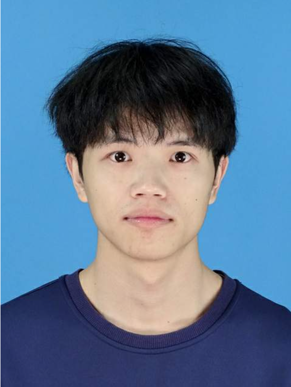
Yi Ouyang Ph.D(2024) M.Eng SWU ouyangyi5205@163.com |
Di Gao Ph.D(2024) M.Eng MUC gaodi_181@163.com |
|
Mingyan Zhao M.Eng.(2022) B.Eng PDSU zmy18790887162@163.com |
Yue Jiao M.Eng.(2022) B.Eng AHTCM 1146233673@qq.com |
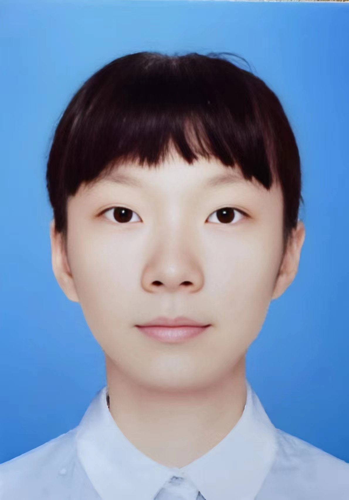
Yuying Zeng M.Eng.(2022) B.Eng SZTU 342604697@qq.com |
Yingbin Cao M.Eng.(2023) B.Eng SZU yingbincao@foxmail.com |
|
Haoran Luo M.Eng.(2023) B.Eng GZHU 2310245007@email.szu.edu.cn |
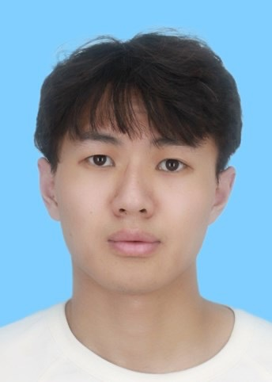
Shoulong Yang M.Eng.(2023) B.Eng SZU 1041914263@qq.com |
Huiya Zhang M.Eng.(2023) B.Eng HUSE lovensoon@qq.com |
Fuli Xu M.Eng.(2024) B.Eng SWJTU 2410247094@mails.szu.edu.cn |
|
Shien Xie M.Eng.(2024) B.Eng NCHU 18170419627@163.com |
Yingqi Zhong M.Eng.(2024) B.Eng GDPU 1543931420@qq.com |
|
Peng Zhai M.Eng.(2013) B.Eng SZU huobifang@szu.edu.cn |

Mingze Ma AR(2021) Ph.D HKU mamz@szu.edu.cn |
Cong Zhao AR(2022) Ph.D HKUST joezhao876@163.com |
Jie Zhou Postdoc(2015) Ph.D ZJU zhoujiecomeon@163.com |
|
Maixian Liu Postdoc(2020) Ph.D UB maxliu@szu.edu.cn |

Zhonglin Cao Postdoc(2020) Ph.D USTC zhonglincao@126.com |
Li Li Postdoc(2020) Ph.D JLU lily140222@163.com |

Na Wu RA(2021) M.Eng. SZU wuna@szu.edu.cn |
|
Gang Feng Postdoc(2020) Ph.D. Uni of Macau 525993893@qq.com |

Xinmeng Zhang Ph.D(2019) M.Eng. CUST 985741755@qq.com |
Huiyu Xiao M.Eng.(2020) B.Eng YAU 839646327@qq.com |
Juanjie Wu M.Eng.(2020) B.Eng DGUT 297165721@qq.com |

Yihang Jiang M.Eng.(2019) B.Eng HAUST Y1hang@outlook.com |
Xiaomin Zou M.Eng.(2019) B.Eng SZU 750945999@qq.com |

Nan Qiao M.Eng.(2020) B.Eng YSU 1939913749@qq.com |
|
|
Shuo Tang M.Eng.(2020) B.Eng AHMU 1073770975@qq.com |
Ribao Chen M.Eng.(2020) B.Eng SZU 1666951649@qq.com |
Shilin Chen B.Eng.(2018) Undergraduate SZU 2230221615@qq.com |
Sihong Chen B.Eng.(2019) Undergraduate SZU 397933757@qq.com |
|
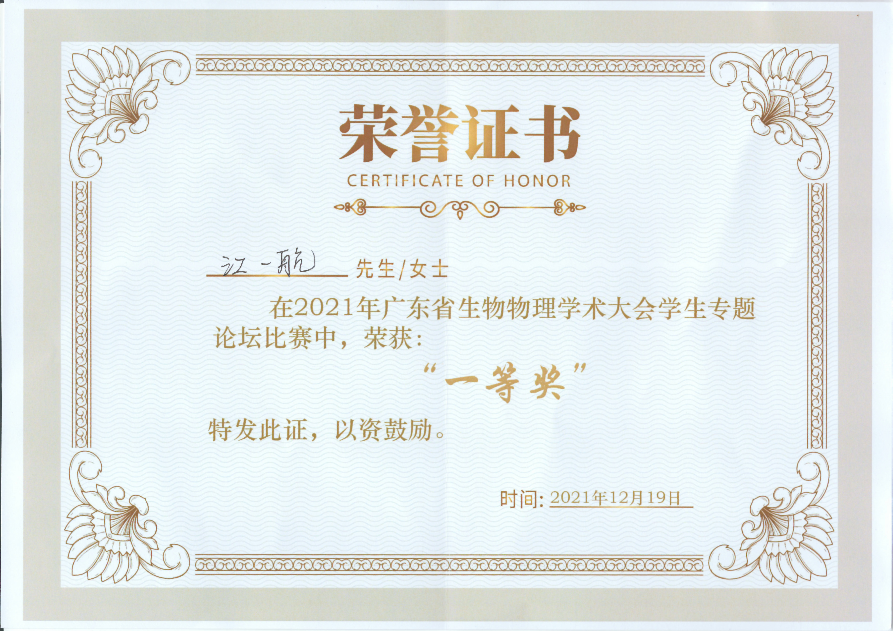
Yihang Jiang |
Yihang Jiang |
Xiaomin Zou |
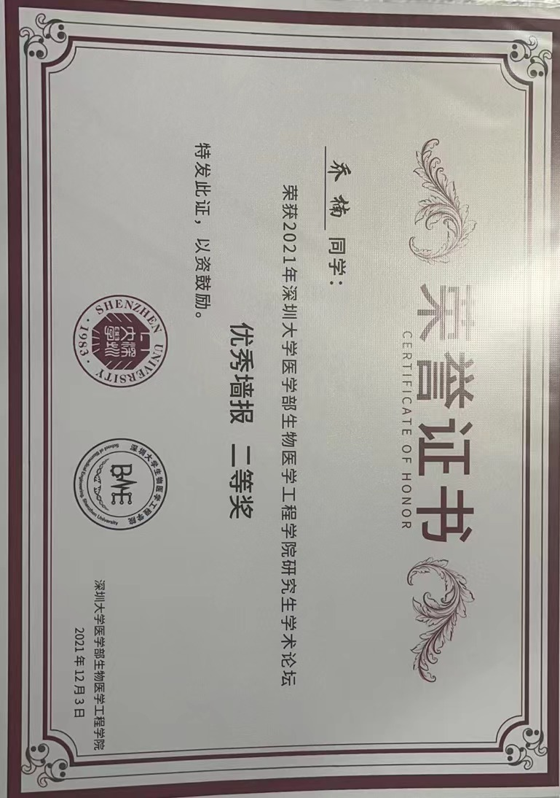
Nan Qiao |
|
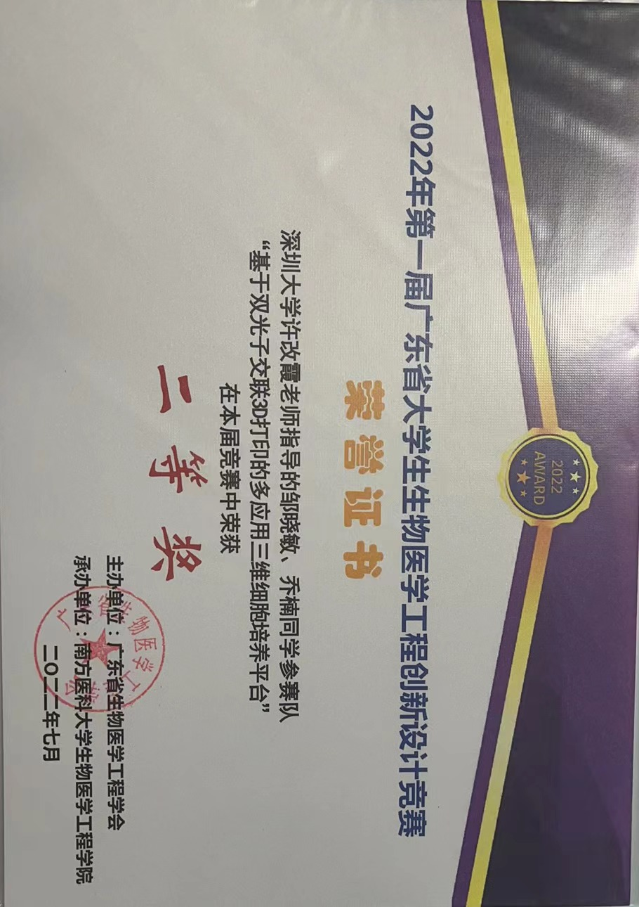
Xiaomin Zou、Nan Qiao |
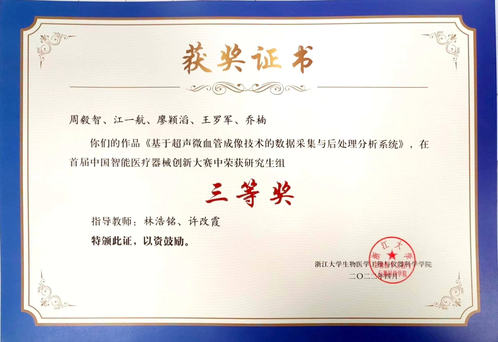
Yizhi Zhou、Yihang Jiang |
Miaozhuang Fan |
Yihang Jiang |
|
Yihang Jiang |
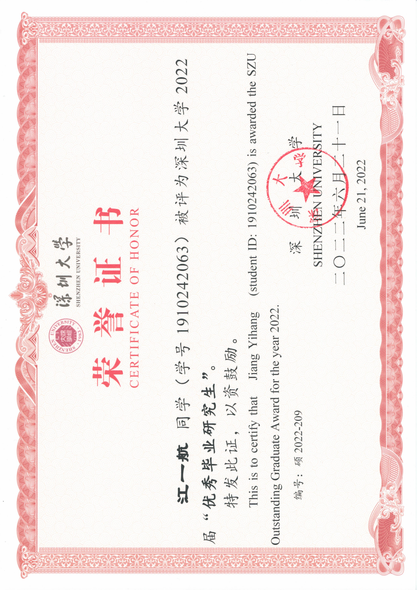
Yihang Jiang |
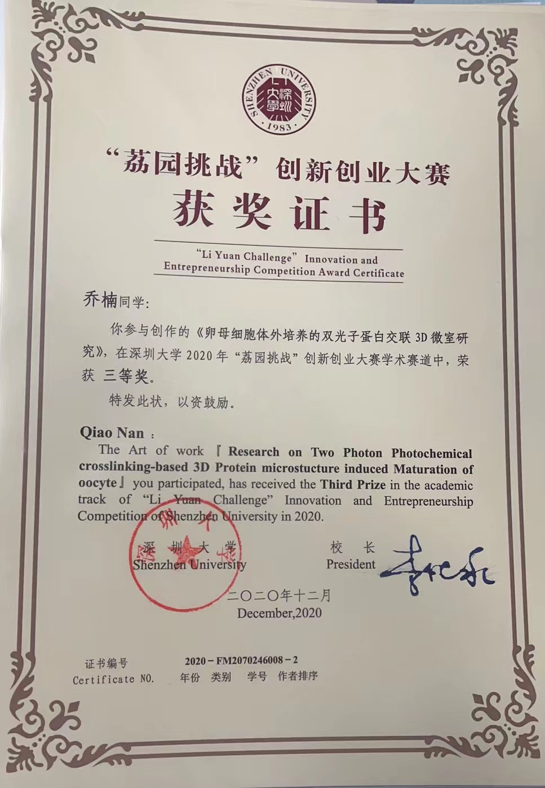
Nan Qiao |
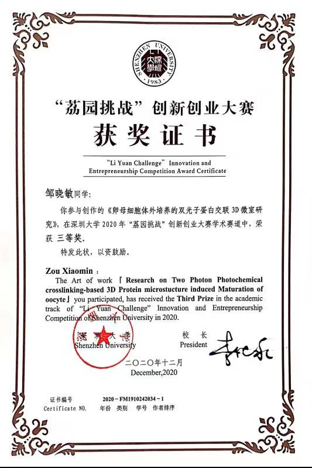
Xiaomin Zou |
|
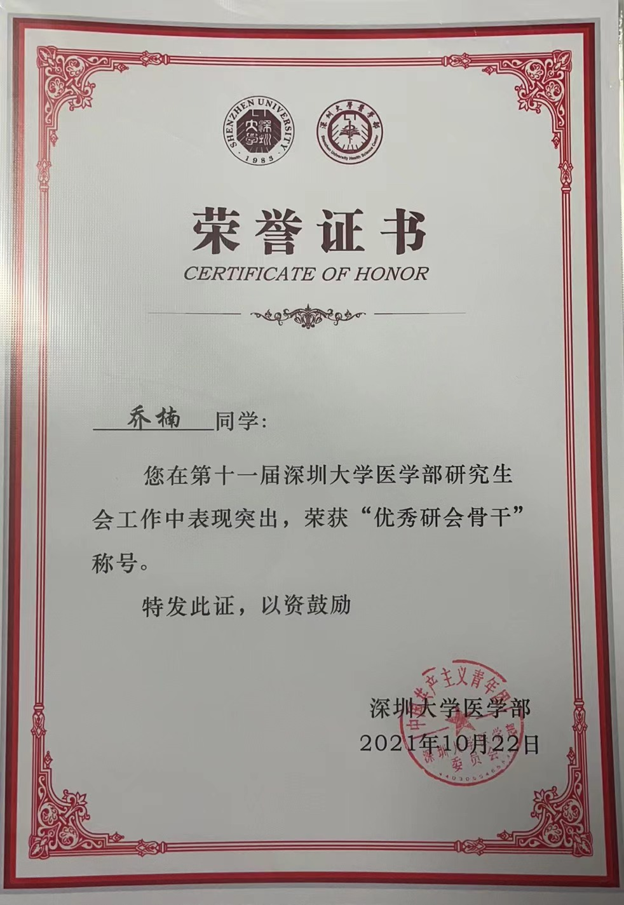
Nan Qiao |
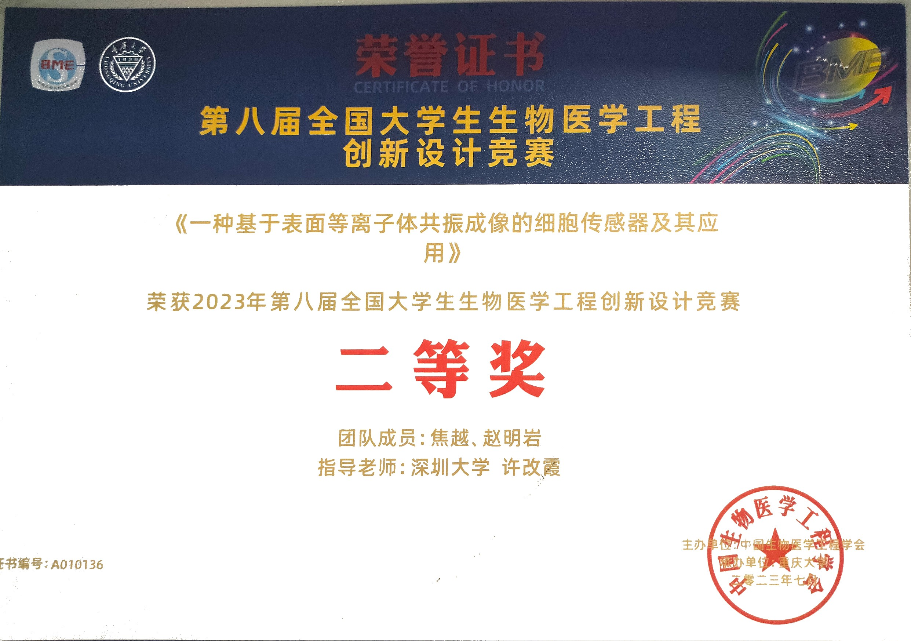
Yue Jiao |

Wenguang Zhang |
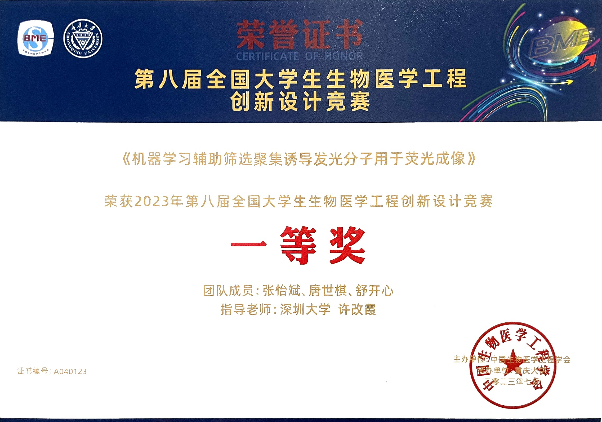
Yibin Zhang |
|
Yibin Zhang |
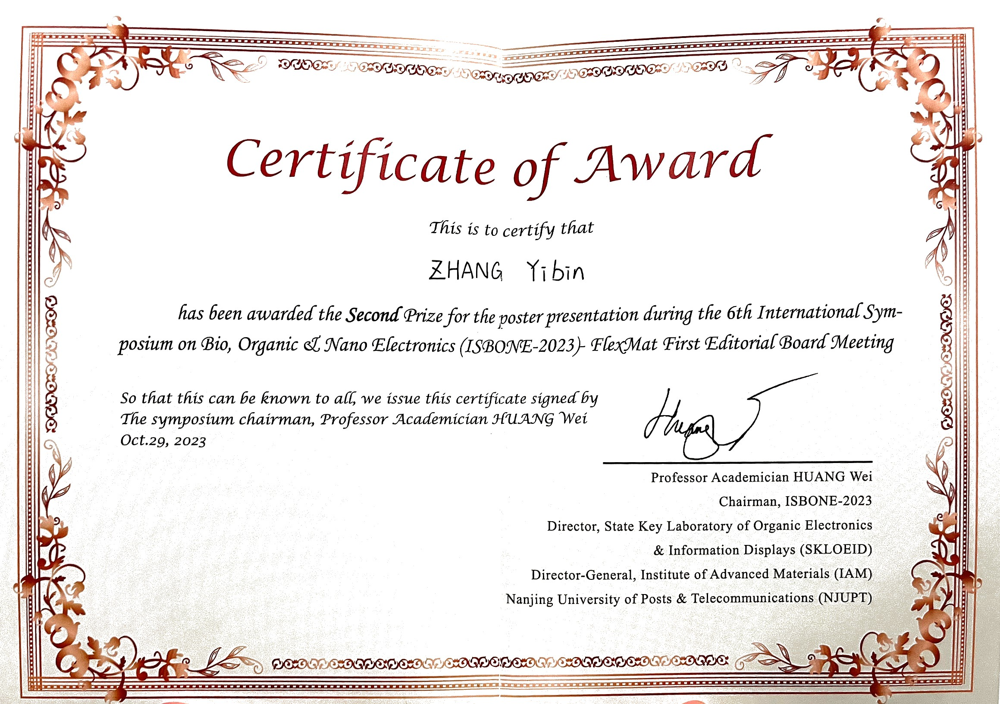
Yibin Zhang |

Yibin Zhang |
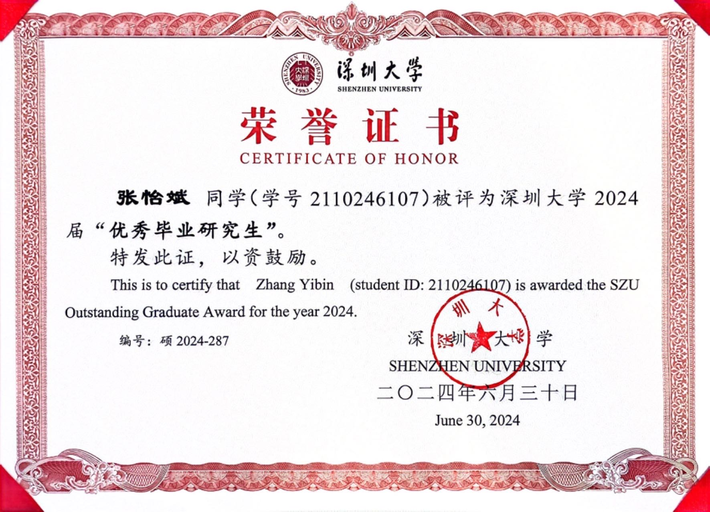
Yibin Zhang |
|
Yibin Zhang |
| 2024 Spring | Digital Electronic Circuits and System Design |
| 2023 Spring | Digital Electronic Circuits and System Design |
| 2022 Spring | Digital Electronic Circuits and System Design |